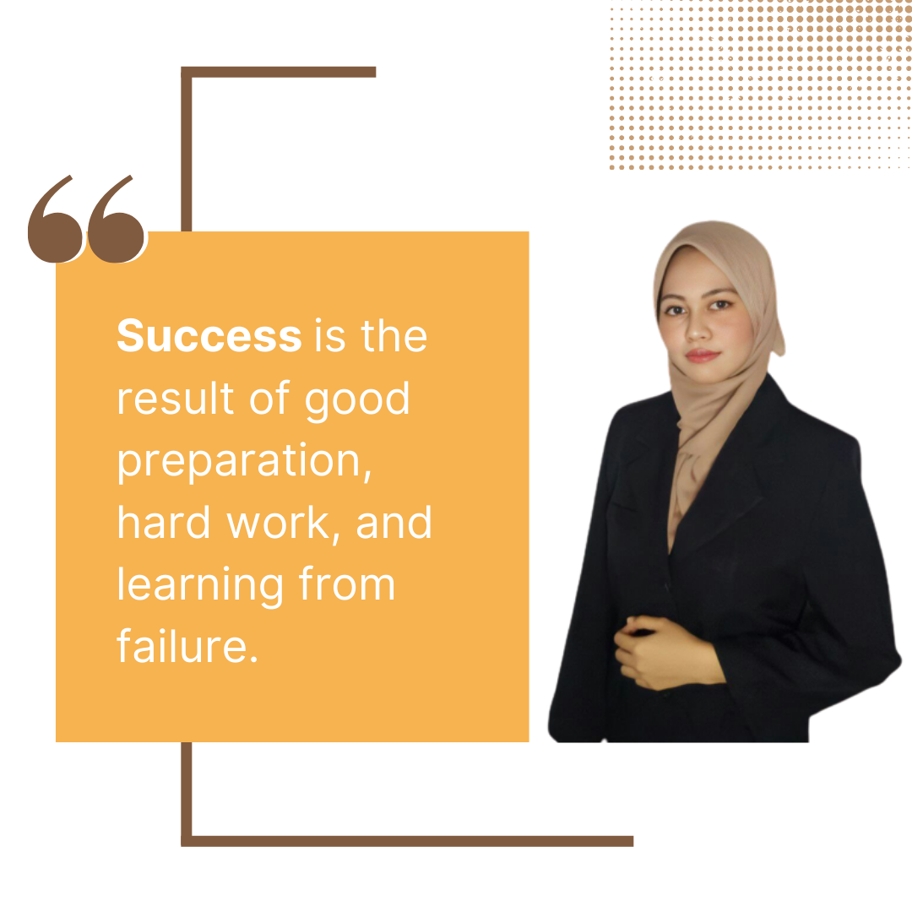

Anak Bukit,
06550 Alor Setar, Kedah.
- Reading
- Cooking
- Gardening

"I am different. That’s my difference."- Anonymous
Assalamualaikum, and hi visitors! |
|
||
| Full Name | Nurul Ain binti Mohd Shukri | |
|---|---|---|
| Age | 21 (2022) | |
| Date of Birth | 10 March 2001 | |
| Place of Birth | Kuala Lumpur | |
| Current City | Shah Alam | |
| Home Address | No.58, Taman Berlian, Anak Bukit, 06550 Alor Setar, Kedah. |
|
| Level of Education | Bachelor Degree | |
| Contact Number | 013-236 7281 | |
| Hobbies | ||
| Marital Status | Single | |
|  |
I was born and raised in Kuala Lumpur for 4 years before moving permanently to Alor Setar Kedah. Being someone in a big family, I am always delighted to cherish every moments with my parents and siblings. I am the fourth child out of six and also a sister figure. I enjoy cooking, gardening and reading during my leisure as well as working on my small established business from the past 2 years. To add, as a student struggling in post-Covid era, I am always prepared in life especially for my mental well-being. The pandemic has affected our loves through several ways. To cope with my busy student's life, I always set up some useful motivations to keep going with everything at once. Motivation is what drives me toward a goal, keeps me going when things get tough, the reason I get up early to exercise or finding the best time to finish assignments, tutorials or projects. To be a successful person, discipline and motivation should be in the same path, with the determination and hard work through every ups and downs. |